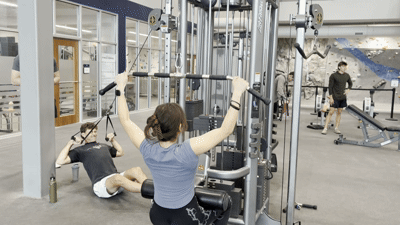
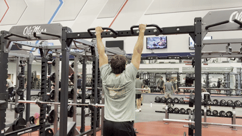
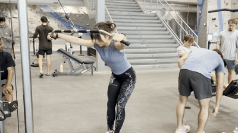

Skip to main content
Lat Pulldowns
Equipment Needed
- Lat pulldown machine
- Wide-grip bar

How To Do It
- Attach a wide-grip bar to the lat pulldown machine and sit down with your thighs secured under the pads.
- Grasp the bar with a pronated (double overhand) grip.
- Depress your shoulder blades, then pull the bar toward your upper chest by driving your elbows down.
- Once your elbows are in line with your torso, slowly return the bar to the starting position under control.
Wide Grip Pull-Ups
Equipment Needed

How To Do It
- Grasp the pull-up bar with a pronated grip, wider than shoulder width.
- Take a deep breath, squeeze your glutes, and brace your abs.
- Depress your shoulder blades, then drive your elbows down toward the floor to pull your chin up to the bar.
- Once your lats are fully contracted, slowly lower yourself back to the starting position.
Straight Arm Lat Pulldowns
Equipment Needed
- Cable machine
- Wide-grip bar

How To Do It
- Attach a wide-grip bar to a high cable pulley and stand facing the machine.
- Grasp the bar with a pronated grip at roughly shoulder width and hinge slightly forward at the hips.
- Keeping a slight bend in your elbows, depress your shoulder blades and pull the bar down in an arc toward your thighs.
- Once your lats are fully contracted, slowly let the bar return to the starting position under control.
← Back to back muscles
 Muscle
Muscle